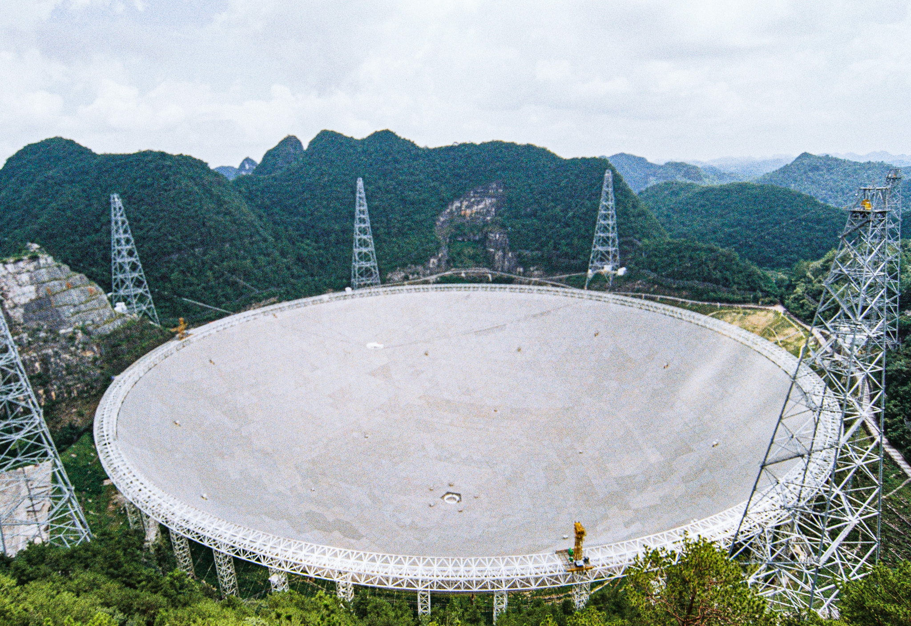

Executive Summary
중국과학원 국가천문대(中国科学院国家天文台) 연구진이 천문학 논문을 읽고 그 논문이 특정 망원경의 데이터를 실제로 썼는지 가려내는 시스템을 공개했다. 이름은 FacilityAudit-Agent이고, 판정 결과는 쓰지 않음부터 이름만 언급, 보조 기여, 주요 기여, 단독 기여까지 여섯 등급으로 나온다. 이 글은 그 여섯 등급이 무엇을 가르고, 가르는 일이 왜 망원경의 예산과 이어지는지를 본다.
논문이 내건 성적은 정확도 89.1%다. 사람이 등급을 매긴 논문-시설 쌍 3만9358건이 시험지였고, 전문을 통째로 모델에 밀어 넣는 방식과 흔히 쓰는 검색증강 방식, 앞서 나온 전용 시스템을 모두 앞섰다. 다만 논문 한 편을 판정하는 데 토큰이 14만에서 45만까지 들고, 애매한 사례는 지금도 사람에게 올라간다. 저자들이 이 시스템에 준 자리도 서지 전문가의 대체가 아니라 그 앞에 놓이는 선별 단계다.
1절부터 5절까지는 논문에 적힌 내용과 공개된 수치를 따라간다. 이 구분을 AI 학습 데이터와 공공데이터 쪽으로 옮긴 6절은 이 글의 해석이고, 논문이 한 말이 아니다.
주요 수치
네 숫자는 모두 논문이 공개한 값이다. 정확도는 시설 하나를 지정해 판정하는 모드에서 잰 것이고, 토큰은 시험에 쓴 논문들을 평균한 값이다.
출처: arXiv:2610.32135 (2026년 10월 23일 공개).
89.1%
단일 감사 모드 정확도
사람이 매긴 등급을 정답으로 놓고 잰 값이다. 전문을 통째로 넣는 방식은 83.3%에 머물렀다
3만9358건
시험에 쓰인 논문-시설 쌍
전체 7만9407건 가운데 시험용으로 떼어 둔 몫이고, 논문 수로는 4,093편이다. 두 사람이 각자 읽어 매긴 등급이다
12.1포인트
앞서 나온 전용 시스템과 벌어진 정확도 차이
가장 좁은 격차는 5.8포인트다. 여섯 등급 가운데 비교 대상과의 차이가 가장 벌어진 곳은 L2와 L5다
14만~45만
논문 한 편을 판정하는 데 드는 토큰
시험에 쓴 논문들의 평균이고, 쓰는 모델에 따라 달라진다. 논문이 스스로 적은 한계 가운데 하나다
이름이 적히면 쓴 것으로 쳤다
대형 관측시설은 한 번 지으면 수십 년을 돌린다. 그 수십 년의 운영비와 아카이브 관리, 다음 장비를 지을지 말지가 모두 한 가지 질문에 걸려 있다. 이 시설이 동료심사를 거친 논문에 실제로 얼마나 기여했는가. 연구진이 이 시스템을 만든 동기로 든 것이 바로 그 지점이다. 인류가 지은 가장 비싼 과학 설비에 속하는 물건인데, 그 성과를 말해 주는 지표는 사실상 문헌 집계 하나뿐이다.
그런데 집계하는 방식이 단출하다. 논문 어딘가에 시설 이름이 적혀 있으면 그 논문을 해당 시설의 성과로 센다. 논문 제목이 겨냥한 것이 바로 이 관행이다. 원제는 Beyond Mention-as-Usage, 언급을 곧 사용으로 치는 셈법을 넘어서자는 뜻이다.
이 셈법에서는 서론에 이런 탐사도 있다며 이름 한 번 적힌 논문과, 결론에 쓴 관측 자료를 전부 그 시설에서 받아 온 논문이 똑같이 1건이다. 두 논문이 그 시설에 진 빚은 전혀 다르다. 그러고 나서 그 숫자로 예산을 나눈다.
여섯 등급이 가르는 것
시스템이 매기는 눈금은 여섯 칸이다. 기준은 하나다. 그 시설에서 나온 데이터가 논문의 과학적 논증을 얼마나 떠받치는가. 이름이 몇 번 나왔는지는 세지 않는다. 결론이 그 데이터 없이도 서는지를 묻는다.
| 등급 | 무엇을 가리키나 |
|---|---|
| L0 무관 | 시설이 언급조차 되지 않았거나, 약어가 모호해 어느 시설인지 특정할 수 없다 |
| L1 언급뿐 | 배경 설명에 이름만 나온다. 그 시설의 관측 데이터는 전혀 쓰이지 않았다 |
| L2 장비·공학 논의 | 시설의 설계나 보정 자체를 다룬다. 그 시설의 관측 데이터를 과학적으로 분석하지는 않는다 |
| L3 보조 기여 | 데이터가 보정이나 비교 용도로 쓰였다. 최종 결론을 떠받치는 핵심 증거는 아니다 |
| L4 주요 기여 | 핵심 결론이 이 시설의 데이터와 다른 관측시설의 데이터에 함께 기댄다 |
| L5 단독 기여 | 결론을 떠받치는 데이터가 오직 이 시설에서만 나왔다 |
출처: arXiv:2610.32135의 L0~L5 정의를 한국어로 옮긴 것이다.
기존 집계가 1건으로 세던 자리는 이 눈금에서 다섯 칸으로 갈라진다. L1과 L5는 장부에서 같은 한 줄이었지만, 시설이 그 논문에 기여한 정도로 보면 양 끝이다.
기계는 논문을 어떻게 읽나
등급을 사람이 매기려면 논문 전문을 읽어야 한다. 서론에 적힌 이름이 데이터 절에서 다시 나오는지, 결과를 받치는 그림이 그 데이터로 그려졌는지를 따라가야 비로소 칸이 정해진다. 천문대 한 곳이 한 해에 훑어야 하는 논문 수를 생각하면 사람 손으로는 감당이 안 된다.
시스템이 택한 길은 논문을 통째로 모델에 밀어 넣지 않는 것이다. 먼저 PDF를 페이지 단위로 쪼개 아웃라인을 만들고, 각 절에 배경·방법·결과 같은 역할과 시설 언급 여부를 붙인다. 그다음 도구를 불러 쓰는 모델이 필요한 대목만 그때그때 꺼내 읽는다. 그렇게 모은 증거를 명시적인 결정 트리에 넣어 등급을 정한다. 어느 절의 어떤 문장이 그 등급의 근거였는지가 남는 구조다.
이 구조의 어느 부분이 성능을 좌우하는지도 논문이 부품을 하나씩 떼어 내 보여 준다. 필요한 대목을 여러 번 오가며 읽는 기능을 떼면 매크로 F1이 79.8%에서 62.9%로 내려가고, 아웃라인을 나무 꼴로 색인하는 기능을 떼면 66.6%가 된다. 16.9포인트와 13.2포인트, 떼어 본 네 부품 가운데 낙폭이 가장 큰 둘이다. 논문은 이 둘이 특히 L3에서 L5까지를 가르는 데 결정적이었다고 적는다. 결론이 그 데이터에 실제로 기대는지 따지는 구간이 곧 구조가 필요한 자리였다는 뜻이다.
마지막 단계가 이 시스템의 성격을 보여 준다. 판정마다 커버리지를 반영한 신뢰도 점수가 붙고, 점수가 낮은 사례는 사람 검토로 넘어간다. 모드는 둘이다. 시설 하나를 지정해 그 논문에서의 등급만 매기는 방식, 그리고 논문에 나온 시설을 먼저 전부 찾아낸 뒤 각각 등급을 매기는 방식이다. 앞의 방식이 89.1%가 나온 자리다.
사람이 매긴 3만9358건과 겨뤘다
시험지부터 사람이 만들었다. 2022년부터 2025년까지 저널 10곳에 실린 논문 8,184편에서, 시설 10곳을 짝지어 논문-시설 쌍 7만9407건을 뽑았다. 시설 목록에는 LAMOST와 FAST와 EP만 있지 않다. 허블 우주망원경과 켁, VLT, 스바루, 제미니, GTC, SDSS가 함께 들어 있다. 중국 시설만 놓고 만든 기준이 아니다.
등급은 두 사람이 따로 전문을 읽어 매겼고, 둘이 갈리면 제3의 조정자가 결정했다. 그 가운데 2,000건을 따로 떼어 두 사람이 얼마나 같은 칸을 골랐는지 재 보니 코언 카파 0.87이 나왔다. 여섯 갈래로 가르는 일에서 사람끼리도 이만큼은 맞았다는 뜻이다. 전체 7만9407건 가운데 3만9358건, 논문 수로는 4,093편이 시험용으로 쓰였다.
결과는 정확도 89.1%, 매크로 F1 79.8%다. 같은 시험에서 비교한 세 가지와 나란히 놓으면 이렇다.
| 방식 | 정확도 | 매크로 F1 |
|---|---|---|
| FacilityAudit-Agent | 89.1% | 79.8% |
| 전문을 통째로 넣는 방식 | 83.3% | 71.1% |
| 문서를 잘라 찾아 쓰는 검색증강 방식 | 80.8% | 66.9% |
| 앞서 나온 전용 시스템(TRACS-AMC) | 77.0% | 63.4% |
출처: arXiv:2610.32135. 정확도 격차는 각각 5.8포인트, 8.3포인트, 12.1포인트다.
논문은 격차가 가장 크게 벌어지는 자리로 L2와 L5를 짚는다. 장비 이야기만 하는 논문과 그 시설 하나에만 기댄 논문, 사람도 전문을 읽어야 비로소 가려지는 양 끝이다. 다만 L2는 사례 자체가 드물어 통계적으로 단단한 결론을 내리기 어렵다는 단서를 논문이 함께 달아 두었다.
그 두 칸의 값은 이렇다. L5에서 F1이 63.9%인데, 비교한 세 방식 가운데 가장 나은 값은 50.0%였다. L2에서도 62.3% 대 48.5%다. 앞섰다는 말은 맞지만, 두 값 모두 전체 매크로 F1인 79.8%보다 한참 아래라는 사실도 같이 읽어야 한다. 등급을 여섯으로 쪼개는 일은 기계에게도 아직 어려운 쪽에 속한다.
모드가 둘이니 성적표도 둘이다. 논문에 나온 시설을 먼저 전부 찾아내는 모드에서는 시설을 빠짐없이 집어내는 일부터가 시험이다. 그 단계의 정밀도가 86.5%, 재현율이 80.4%, F1이 83.3%다. 위 표에 나온 83.3%와 같은 값이지만 오자가 아니다. 그쪽은 전문을 통째로 넣는 방식의 정확도이고, 이쪽은 시설을 빠짐없이 집어냈는지를 잰 F1이다. 제대로 집어낸 쌍만 놓고 등급을 매긴 매크로 F1은 78.6%였다. 이 모드에서도 비교한 세 방식을 모두 앞섰다.
이미 세 시설의 집계에 들어가 있다
이 시스템은 발표용 시제품에 머물러 있지 않다. 국가천문과학데이터센터(国家天文科学数据中心)에 배포돼 LAMOST와 FAST, 아인슈타인 프로브(EP) 세 시설의 문헌 데이터 처리에 쓰이고 있다. 셋 다 중국이 운영하는 대형 관측시설이다.

그렇다고 사람이 손을 뗀 것은 아니다. 서지 전문가가 검토하기 전에 한 번 걸러 내는 데까지가 이 시스템에 주어진 몫이다. 신뢰도가 낮게 매겨진 판정은 사람에게 올라간다.
논문이 설계상의 장점으로 내세우는 것 하나는 새 시설로 옮겨 쓸 때 다시 학습시킬 필요가 없다는 점이다. 데이터로 길들인 분류기가 아니라 등급 정의와 결정 트리로 판정하는 구조이니, 애초에 학습시킬 것이 없다. 다만 같은 논문의 한계 절에는 그 옮겨 쓰기가 아직 시험되지 않았다고 적혀 있다. 지금까지 확인된 것은 시설 10곳 안에서의 성적이다.
한계도 논문이 직접 적었다. 논문 한 편을 판정하는 데 드는 토큰이 모델에 따라 평균 14만2000에서 45만5000까지 간다. 안정적인 도구 호출과 정해진 형식의 출력에 기대는 구조라, 쓰는 모델이 흔들리면 판정도 같이 흔들린다. 검증 범위 역시 시설 10곳과 특정 저널·연도에 묶여 있고, PDF가 깨끗하지 않으면 아웃라인을 세우는 첫 단계부터 어긋난다. 다음 과제로 적힌 항목 가운데는 이 선별이 사람 검토 시간을 실제로 얼마나 아꼈는지 측정하는 일이 들어 있다. 아직 측정하지 않았다는 뜻이다.
페블러스가 이 논문을 주목하는 이유
천문학 바깥에도 같은 장부가 있다. 어떤 자원이 얼마나 쓰였는지를 이름이 적힌 횟수로 세는 자리 말이다.
AI 학습 데이터의 출처 표기가 그렇다. 모델 카드나 데이터시트에 데이터셋 이름이 올라가 있다는 사실은, 그 데이터가 모델의 능력 가운데 무엇을 얼마나 키웠는지는 거의 말해 주지 않는다. 한 번 섞여 들어간 소량의 말뭉치와 모델의 성격을 결정한 말뭉치가 목록에서는 같은 한 줄이다. 공공데이터 활용 실적도 닮았다. 조회수와 내려받은 횟수로 활용을 세면, 한 번 열어 보고 닫은 경우와 그 데이터 위에 서비스를 올린 경우가 똑같이 1건이 된다.
FacilityAudit-Agent가 한 일을 다시 보면, 새 모델을 만든 쪽보다 세는 법을 다시 정의한 쪽이 크다. 이름이 올라간 것과 결론이 그 데이터로 선 것 사이에 칸을 넣고, 그 칸을 기계가 일관되게 매기도록 했다. 천문학 사례에서 가져올 만한 것은 그 순서다.
- • 등급을 먼저 정의한다. 무엇이 L1이고 무엇이 L5인지가 글로 적혀 있지 않으면 사람도 기계도 같은 판정을 반복하지 못한다
- • 사람이 라벨을 달아 시험지를 만든다. 두 사람이 따로 읽고 갈리면 조정자가 정하는 절차, 그리고 둘의 합치도를 숫자로 내놓는 일이 여기에 붙는다
- • 기계 판정과 사람 판정이 얼마나 맞는지를 공개한다. 89.1%라는 수치가 쓸모 있는 이유는 높아서가 아니라, 어떤 시험지에서 나왔는지가 함께 적혀 있어서다
- • 애매한 사례가 어디로 가는지 정해 둔다. 신뢰도가 낮은 판정을 사람에게 올리는 경로가 없으면, 여섯 칸짜리 눈금도 결국 한 칸짜리 장부처럼 쓰인다
페블러스가 AI-Ready Data를 말할 때 품질 다음에 놓는 것이 출처와 계보다. 어떤 데이터가 어느 결과에 얼마나 기여했는지를 되짚을 수 있는 상태 말이다. 이 논문은 그 되짚기를 등급으로 적어 두면 기계가 대신 매길 수 있다는 것을 사람이 매긴 3만9358건과 맞춰 보여 준다. 등급이 없으면 남는 것은 이름이 적혔다는 사실 하나뿐이다.
Editor's Note
이 논문에서 오래 남을 숫자는 89.1%가 아니라 여섯일 것 같다. 정확도는 모델이 좋아지면 따라 오르고, 몇 달 뒤에는 다른 팀이 더 높은 값을 들고 나올 것이다. 반면 기여를 여섯 등급으로 나눈 결정은 그렇게 갈아 끼울 수 없다. 그 결정이 있어야 비로소 정확도라는 말이 성립하기 때문이다. 세는 법이 없는 자리에서는 틀렸다는 말조차 할 수 없고, 그동안 망원경 장부가 바로 그런 자리였다.
여기까지 읽어 주셔서 감사하다. 이 글의 사실관계는 2026년 10월 23일 arXiv에 공개된 arXiv:2610.32135에서 확인했고, 중국 기관명의 한자 표기는 국가천문과학데이터센터 공식 사이트에서 대조했다. 6절의 유비는 논문이 한 말이 아니라 데이터를 다루는 쪽에서 본 이 글의 해석이다. 사내에서 데이터 활용 실적을 몇 칸짜리 눈금으로 세고 계신지 나눠 주시면 좋겠다.
(주)페블러스 데이터 커뮤니케이션팀
2026년 10월 28일